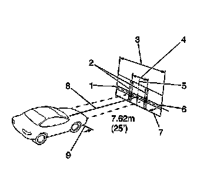
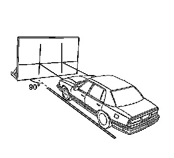
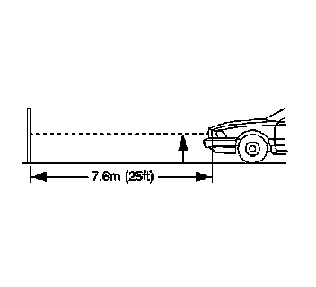
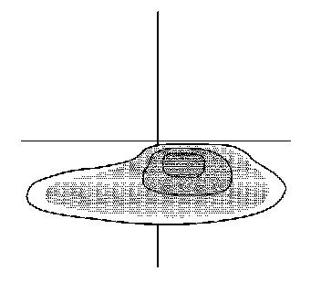

Headlamp: Adjustments
Headlamp Aiming
Aiming Headlamps (Visual Aim)
Important: Some state and local laws specify requirements for headlamp aim. All of these laws must be complied with when performing any headlamp aiming operations.
Headlamp aim should be checked:
* When a new headlamp capsule is installed
* If service or repairs to the front end area have (or may have) disturbed the headlamps or their mounting
* The area will consist of a level surface large enough to allow for a vehicle and an additional 7.62 m (25 feet) measured from face of lamps to the front of the aiming screen.
* The screen will be 1.52 m (5 ft) high x 3.66 m (12 ft) wide with a matte white surface well shaded from extraneous light, and properly adjusted to the floor on which the vehicle stands. Provisions may be made for moving the screen so it can be aligned parallel with the vehicle.
* The screen shall be provided with a fixed vertical centerline, two laterally adjustable vertical tapes, and one vertically adjustable horizontal tape.
* If a regular commercial aiming screen is not available, the screen may consist of a vertical wall having a clear uninterrupted area approximately 1.83 m (6 ft) high and 3.66 m (12 ft) wide. The surface should be finished with a washable non-gloss white paint.

* After the aiming screen has been set up in its permanent location, it is necessary to paint a reference line on the floor directly under the lens of the lamps to indicate the proper location of the headlamps when they are being aimed:
- Distance between headlamps (1)
- Center line of screen (2)
- Adjustable vertical pointer (3)
- Adjustable horizontal tape (4)
- Diagram of light screen (5)
- Vertical center line ahead of right headlamp pointer position (6)
- 7.62 m (25 ft) (7)
- Car axis (8)
- Adjustable vertical pointer
- Horizontal center line of lamps
- Vertical center line ahead of left headlamp
Prior to aiming the headlamps, the following steps must be taken:
1. Remove any snow, ice or mud from the vehicle.
2. The vehicle must have a full tank of gas.
3. Stop all other work on the vehicle.
4. If any service has been performed on the vehicle, make sure that all of the components are back in their original place.
5. The vehicle must be on a level surface.

6. The vehicle left tires must be aligned with the reference line extending from the screen with the headlamps aligned with the reference line.
7. Do not load any cargo in the vehicle.
8. The vehicle must contain one person or 72.56 kg (160 lb) on the driver's seat.
9. Inflate the tires to the proper pressure.
10. Simulate the vehicle loads if the intended use of the vehicle is for hauling heavy loads or towing a trailer.
11. Rock the vehicle in order to stabilize the suspension.
12. Turn on the headlamps to low beam and observe the left and the top edges of the high intensity zone on the screen. The edges of the high intensity zone should fall within the specifications.
Headlamp Aiming Procedure
1. Open the hood.

2. Measure from the floor to the center of the headlamp bulb. (Some headlamps have an aim dot marked on the headlamp lens).
3. At the screen, measure from the floor and place the horizontal tape at the measured distance.
4. Measure from the reference line on the floor to the left headlamp bulb centerline.
5. At the screen, measure from the reference line and place the vertical tape at the measured distance.
6. Measure from the reference line on the floor to the right headlamp bulb centerline.
7. At the screen, measure from the reference line and place the vertical tape at the measured distance.
Important: Do not cover the headlamp, this may cause excessive heat build up.

8. Turn on the low beam headlamps and block the light from projecting onto the screen from the passenger side headlamp.

Important: Horizontal headlamp adjustment does not exist.
9. Adjust the vertical aim of the headlamps to the specifications required by the state and the local authorities, or as shown in step number 8.
10. Rotate the headlamp adjuster (1) to change the vertical aim of the headlamp.
11. Repeat the aiming procedure for the passenger side headlamp while blocking the light from projecting onto the screen from the driver side headlamp.
12. Close the hood.